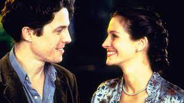

Um Lugar Chamado Nothing Hill

Will (Hugh Grant), pacato dono de livraria especializada em guias de viagem, recebe a inesperada visita de uma cliente muito especial: a estrela de cinema americana Anna Scott (Julia Roberts). Dois ou três encontros fortuitos mais tarde, Will e Anna iniciam um relacionamento tenro, engraçado e cheio de idas e vindas.
Cartas para Julieta

Em Cartas para Julieta, Sophie (Amanda Seyfried) é uma aspirante a escritora que viaja para a Itália ao lado do noivo Victor (Gael García Bernal), que sonha em ter seu próprio restaurante. Em Verona, onde se passou a história de Romeu e Julieta, local perfeito para uma lua de mel antecipada, Sophie acaba percebendo que seu noivo está mais interessado nos fornecedores para seu restaurante do que nela. Na cidade descobre uma antiga carta de amor e junta-se a um grupo de voluntárias que responde estas missivas amorosas. Para sua surpresa, a remetente Claire Smith (Vanessa Redgrave) ouve o conselho dado na resposta e vai procurar Lorenzo, por quem se apaixonou na juventude. Mas existem muitos italianos com o mesmo nome e Sophie demonstra interesse em ajudá-la na tarefa, desagradando o neto Charlie (Christopher Egan), que já tinha reprovado essa louca aventura da avó viúva.